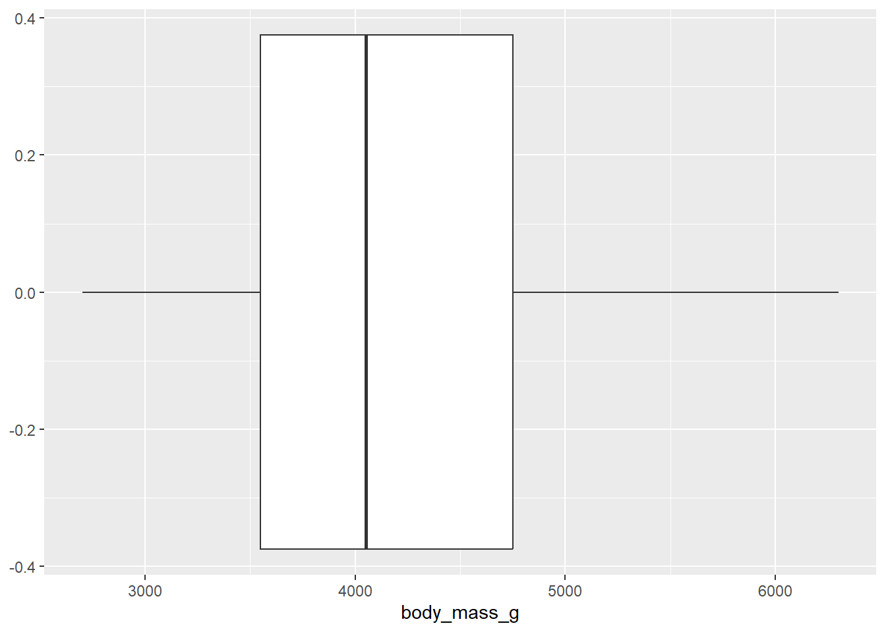
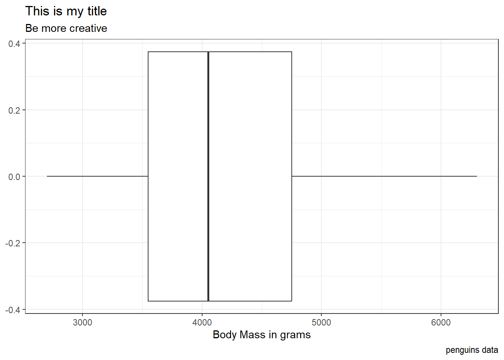
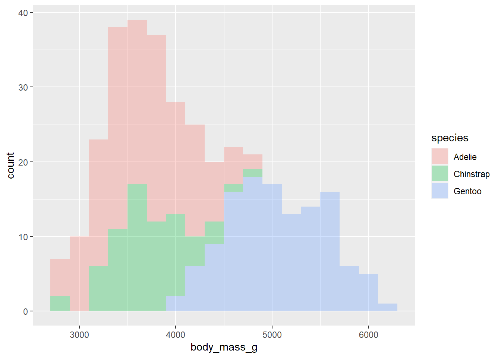
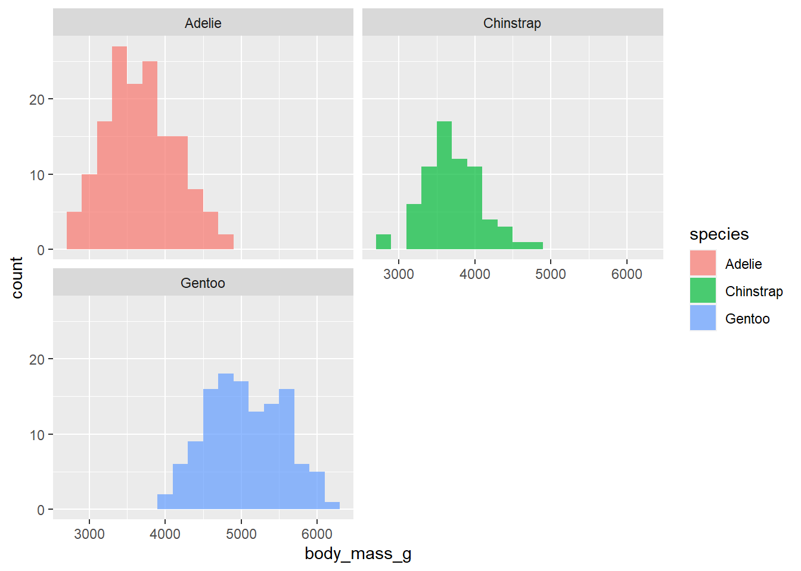
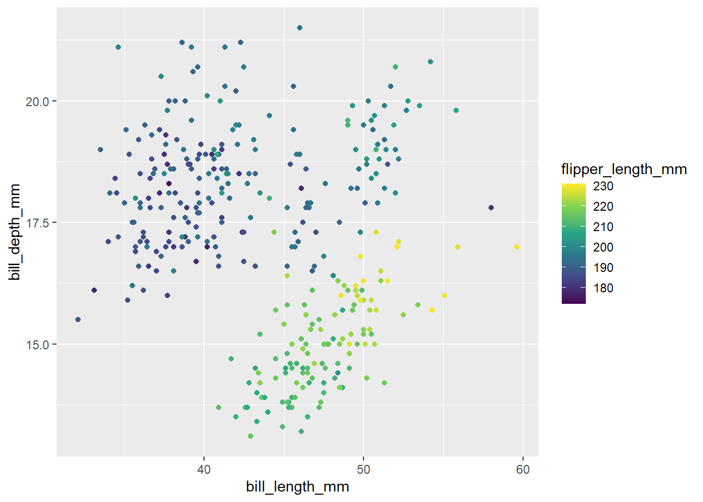

library(tidyverse)
library(palmerpenguins)
#The data set name is penguinsGeom AE
Suggested Answers
For this ae, we’ll use the tidyverse and palmerpenguins packages.
These data were collected from 2007 - 2009 by Dr. Kristen Gorman with the Palmer Station Long Term Ecological Research Program, part of the US Long Term Ecological Research Network. The data were imported directly from the Environmental Data Initiative (EDI) Data Portal, and are available for use by CC0 license (“No Rights Reserved”) in accordance with the Palmer Station Data Policy.
Packages
What are the #| above?
Code chunk arguments
Which ones will we use during the semester? State and define them below.
label message warnings echo eval
Why label? Makes navigation and referencing code easier.
But sometimes, they can cause issues….. render your document and read the error. Why won’t the document render?
Data
The dataset we will visualize is called penguins. Let’s glimpse() at it. Also let’s practice using the useful function of the day names() on our data set.
glimpse(penguins)Rows: 344
Columns: 8
$ species <fct> Adelie, Adelie, Adelie, Adelie, Adelie, Adelie, Adel…
$ island <fct> Torgersen, Torgersen, Torgersen, Torgersen, Torgerse…
$ bill_length_mm <dbl> 39.1, 39.5, 40.3, NA, 36.7, 39.3, 38.9, 39.2, 34.1, …
$ bill_depth_mm <dbl> 18.7, 17.4, 18.0, NA, 19.3, 20.6, 17.8, 19.6, 18.1, …
$ flipper_length_mm <int> 181, 186, 195, NA, 193, 190, 181, 195, 193, 190, 186…
$ body_mass_g <int> 3750, 3800, 3250, NA, 3450, 3650, 3625, 4675, 3475, …
$ sex <fct> male, female, female, NA, female, male, female, male…
$ year <int> 2007, 2007, 2007, 2007, 2007, 2007, 2007, 2007, 2007…names(penguins)[1] "species" "island" "bill_length_mm"
[4] "bill_depth_mm" "flipper_length_mm" "body_mass_g"
[7] "sex" "year" Visualizing penguin weights - Demo
Useful links:
https://ggplot2.tidyverse.org/reference/
Don’t forget about your ggplot cheetsheet as well!
Single variable
Note
Analyzing the a single variable is called univariate analysis.
Create visualizations of the distribution of weights of penguins.
Before making a visualization of penguins’ weight, let’s brainstorm what types of would and would not be appropriate. Indicate Yes or No next to each. If no, suggest when it would be appropriate to make such a plot.
- Scatterplot? N
- Histogram? Y
- Boxplot? Y
- Bar plot? N
- Segmented Bar plot? N
Live Coding Questions
- Make a histogram by filling in the
...with the appropriate arguments. Set an appropriate binwidth. Once you have the correct code, delete#| eval: falseor change false to true
penguins |>
ggplot(
aes(x = body_mass_g)) + #type variable name here
geom_histogram() #type geom hereDescribe the shape of this distribution below..
Evidence of being right skewed
- Now, make a boxplot of
weights of penguins.
penguins |>
ggplot(
aes(x = body_mass_g)
) +
geom_boxplot()Warning: Removed 2 rows containing non-finite values (`stat_boxplot()`).
What does this visualization tell you about penguins’ weight?
Median close to 4000g
- Add a theme to your boxplot!
https://ggplot2.tidyverse.org/reference/ggtheme.html
penguins |>
ggplot(
aes(x = body_mass_g)) +
geom_boxplot() +
theme_bw() +
labs(x = "Body Mass in grams",
title = "This is my title",
subtitle = "Be more creative",
caption = "penguins data")Warning: Removed 2 rows containing non-finite values (`stat_boxplot()`).
Why can / should we use themes?
Make plots more professional + add color
Now, let’s take control of our labels. Using the ggplot cheet sheet, reference the Labels and Legends column. Add some labels to your plot above.
Two variables
Note
Analyzing the relationship between two variables is called bivariate analysis.
What if we want to make side by side boxplots to look at body mass across species? Do so below…
penguins |>
ggplot(
aes(x = species, y = body_mass_g)
) +
geom_boxplot()Warning: Removed 2 rows containing non-finite values (`stat_boxplot()`).
We can do more in the aesthetics then specify x and y variables. Note: aesthetic is a visual property of one of the objects in your plot. Aesthetic options are:
- shape
- color
- size
- fill
Below, we are going to practice with each of these options.
- Make a histogram of penguins’ weight where the bars are filled in by species type. Set an appropriate binwidth and alpha value. At the same time, comment each line of code to articulate what it’s doing.
penguins |>
ggplot(
aes(x = body_mass_g, fill = species )) +
geom_histogram(binwidth = 200, alpha = 0.3)Warning: Removed 2 rows containing non-finite values (`stat_bin()`).
What happens when we change fill to color?
What happens when we change fill to shape?
What happens when you change the binwidth?
What happens when you change alpha?
- What if we don’t want the overlap? We can use
facet_wrapto split the histograms apart! This function takes the name of the variable you want to split by, and how many cols/rows you want your plots to show up in. Run?facet_wrapin your console and read the first two arguments of the function. Then, use facet_wrap to split the histograms apart!
penguins |>
ggplot(
aes(x = body_mass_g, fill = species )) +
geom_histogram(binwidth = 200, alpha = .7) +
facet_wrap(~species, ncol = 2)Warning: Removed 2 rows containing non-finite values (`stat_bin()`).
In 1-2 sentences, describe what you see in the plot you created.
Can comment on center and skew of each distribution
- We need to think critically about color when thinking about creating visualizations for a larger audience: https://ggplot2.tidyverse.org/reference/scale_viridis.html
We will do more with colors throughout the semester. Think about this is as our first introduction. We can create a colorblind friendly pallet using scale_colour_viridis_d() or scale_colour_viridis_c() depending on the type of variable we are working with. Below, comment the code below to describe what it’s doing:
p <- penguins |> # this is the data set | we are saving this plot as object p
ggplot( #this sets up my plot
aes(x = body_mass_g, y = bill_length_mm , color = species)
) +
geom_point()
pWarning: Removed 2 rows containing missing values (`geom_point()`).
p + scale_colour_viridis_d()Warning: Removed 2 rows containing missing values (`geom_point()`).
Change the above code to say scale_colour_viridis_c(). Does the code run? Why or why not?
Because species is categorical
Let’s get practice using scale_colour_viridis_c(). Below, create a scatterplot between bill_length and bill_depth. Color the dots of the scatterplot by the penguins flipper length. Use scale_colour_viridis_c() to create a colorblind friendly pallet.
Hint: if you create points, give it a color, not a fill. In general fill changes the color within shapes, and color changes the outline. However, default points are not considered shapes.
penguins |>
ggplot(
aes(x = bill_length_mm, y = bill_depth_mm, color = flipper_length_mm )
) +
geom_point() +
scale_colour_viridis_c()Warning: Removed 2 rows containing missing values (`geom_point()`).
This is a good time to practice with size. Remove scale_colour_viridis_c() and change color = to size =. What changed?
We now see the size of the points change by flipper length instead of being colored by flipper length